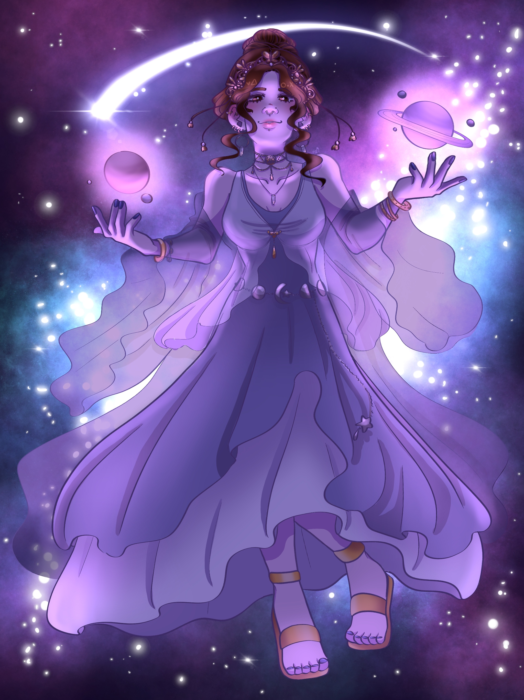
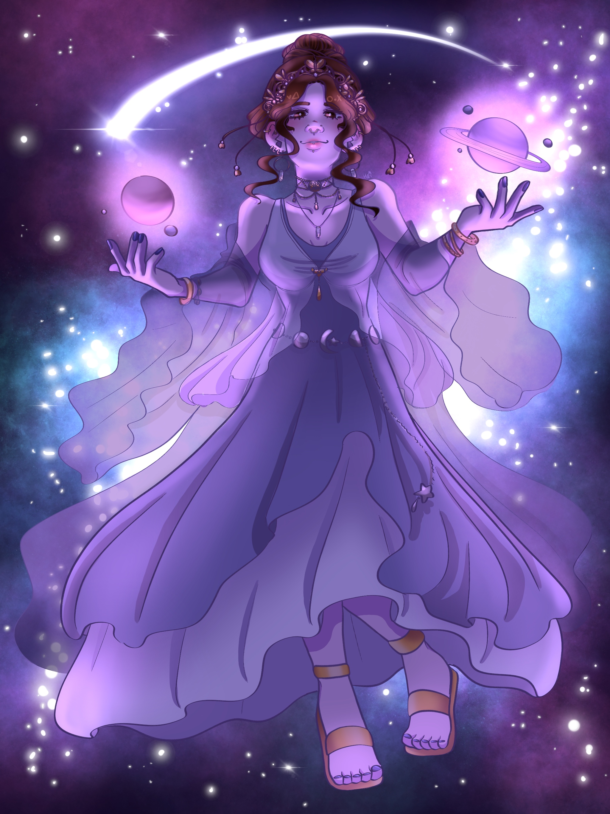

Fan Art
Art of characters from media and other artists I admire.
吐きそうだ (JoJo's Bizarre Adventure) - 2024
 Elliot (Par0llel's character) - 2024
Choso (Jujutsu Kaisen) - 2023
Elliot (Par0llel's character) - 2024
Choso (Jujutsu Kaisen) - 2023
 Qiao Ling (Link Click) - 2023
Mitsuri (Demon Slayer) - 2023
Rimuru (That Time I Got Reincarnated as a Slime) - 2023
Josuke (JoJo's Bizarre Adventure) - 2023
Joseph (JoJo's Bizarre Adventure) - 2023

Kailan (@k.aila.n on instagram) - 2022
Tanjiro (Demon Slayer) - 2021
Qiao Ling (Link Click) - 2023
Mitsuri (Demon Slayer) - 2023
Rimuru (That Time I Got Reincarnated as a Slime) - 2023
Josuke (JoJo's Bizarre Adventure) - 2023
Joseph (JoJo's Bizarre Adventure) - 2023

Kailan (@k.aila.n on instagram) - 2022
Tanjiro (Demon Slayer) - 2021
 Nezuko (Demon Slayer) - 2021
Nezuko (Demon Slayer) - 2021
 Frozen Lake (Promare) - 2020
Ocean Eyes (Attack on Titan) - 2019
Frozen Lake (Promare) - 2020
Ocean Eyes (Attack on Titan) - 2019